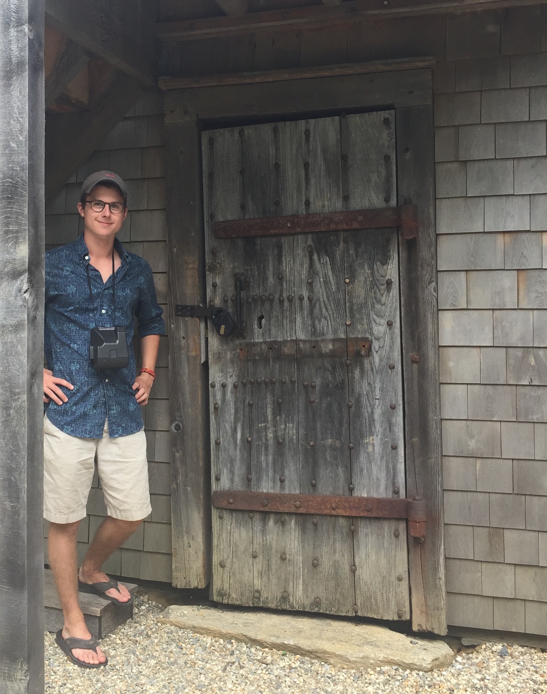

I was born in Connecticut and lived there for the first 18 years of my life. After graduating Darien High School in 2015, I began attending Tufts University.
I am currently studying Computer Science through the School of Engineering and Applied Mathematics through the School of Arts and Sciences. I will be graduating in 2019.